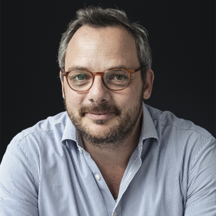

Invited speakers
Philipp Kukura
Professor Philipp Kukura develops new optical methods for biophysical chemistry and molecular biophysics, with a current focus on mass photometry and other light-scattering approaches for detecting, imaging, and weighing single biomolecules in solution. His goal is to transform how biomolecular processes are monitored and quantified, ultimately enabling direct observation of biomolecules in action. Based in the Kavli Centre for Nanoscale Discovery, he works collaboratively across departments and disciplines. His research spans two fronts: building novel optical hardware and analysis frameworks to open up new measurement modalities, and applying these tools to mechanistic studies of biomolecular interactions and assembly.
For more information, please visit The Kukura Lab website
Ilaria Testa

Prof. Ilaria Testa works at the interface of physics, chemistry, and neuroscience to develop and apply cutting-edge fluorescence imaging technologies. She advances super-resolution light microscopy for live-cell studies, pushing spatial and temporal limits with platforms such as MoNaLISA, Smart RESOLFT, and Adaptive STED, and by creating molecular switchers like rsFusionRed with custom illumination schemes. Her methods identify biomolecule populations by localization, abundance, and dynamics in their native environments with 20–70 nm precision—well beyond the diffraction limit. She applies these tools to reveal the localization and function of neuronal proteins, especially at synapses and in fine neuronal processes where crowded, fast trafficking demands high-resolution imaging in space and time.
For more information, please visit SciLifeLab website
Aleks Ponjavic
Dr. Aleks Ponjavic Aleks Ponjavic is an Associate Professor who develops optical imaging methods to watch single molecules at work inside cells. He focuses on single-molecule fluorescence imaging, light-sheet microscopy, super-resolution microscopy, and high-speed fluorescence techniques to reveal how proteins move, interact, and organize in three dimensions under near-physiological conditions. His work advances custom hardware and analysis to push beyond the diffraction limit, enabling videos of individual biomolecules and mechanistic studies ranging from immune-cell receptor recognition to DNA conformational control of gene expression.
For more information, please visit The Astbury Centre for Structural Molecular Biology website
Kristina Ganzinger
Dr. Kristina Ganzingerinvestigates the fundamental physics of cellular signaling, with a particular emphasis on immune pathways. Her group use artificial cells to explore how membrane topography and dynamics enable cells to sense, discriminate, and respond to signals. They also spend significant time on development of new methods and instrumentation to improve spatial and temporal resolution in fluorescence microscopy.
For more information, please visit The Physics of Cellular Interactions Group
Selected speakers
The selected talks will be updated on 31th March 2026.